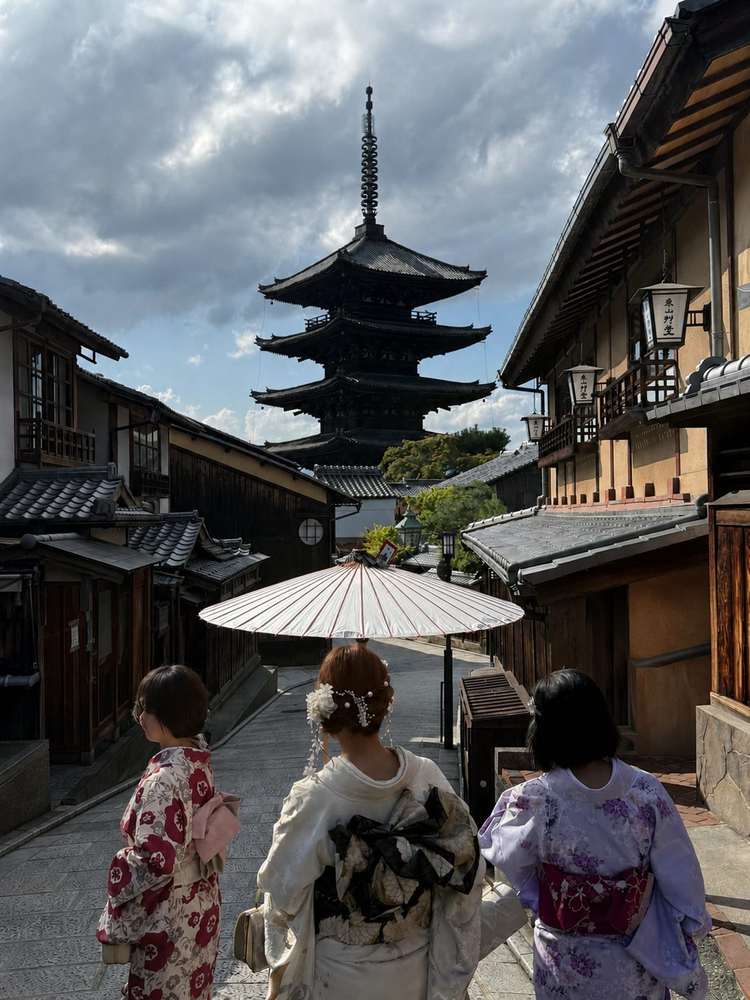
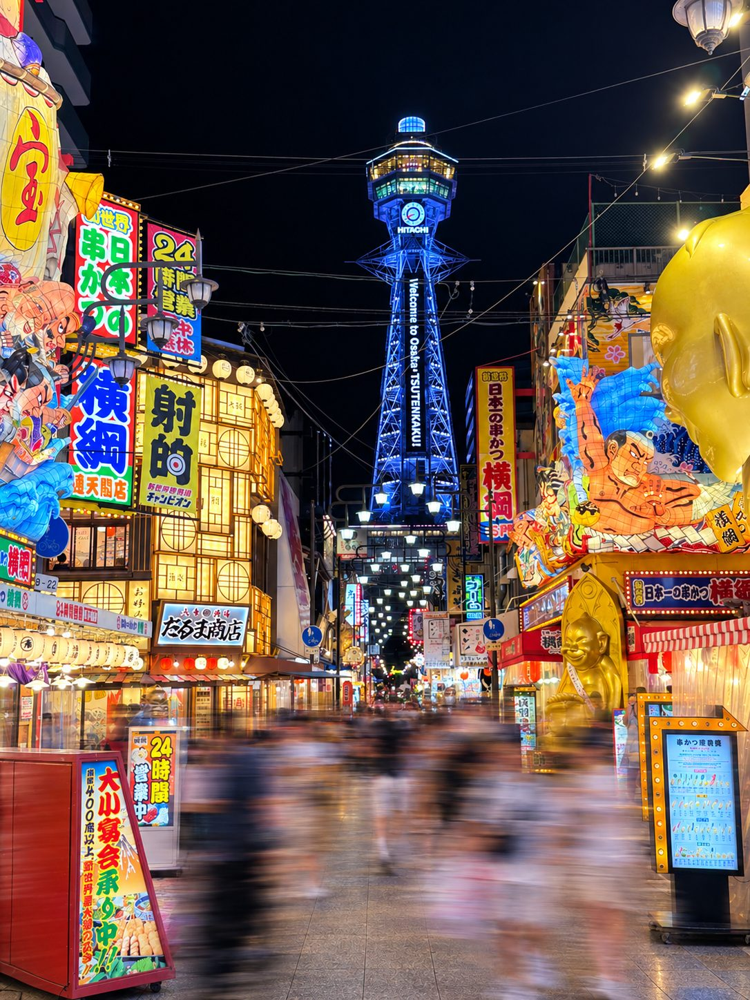
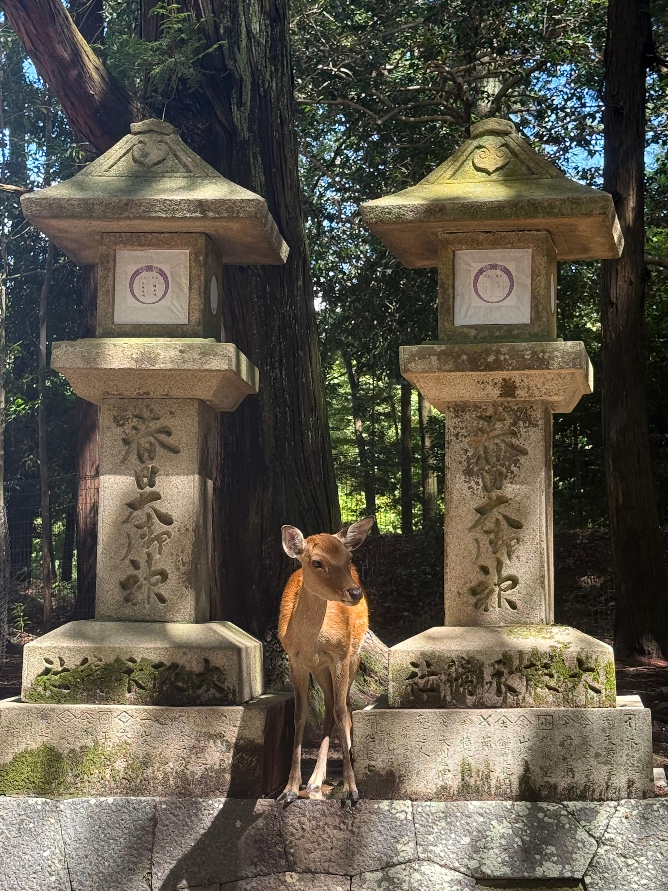
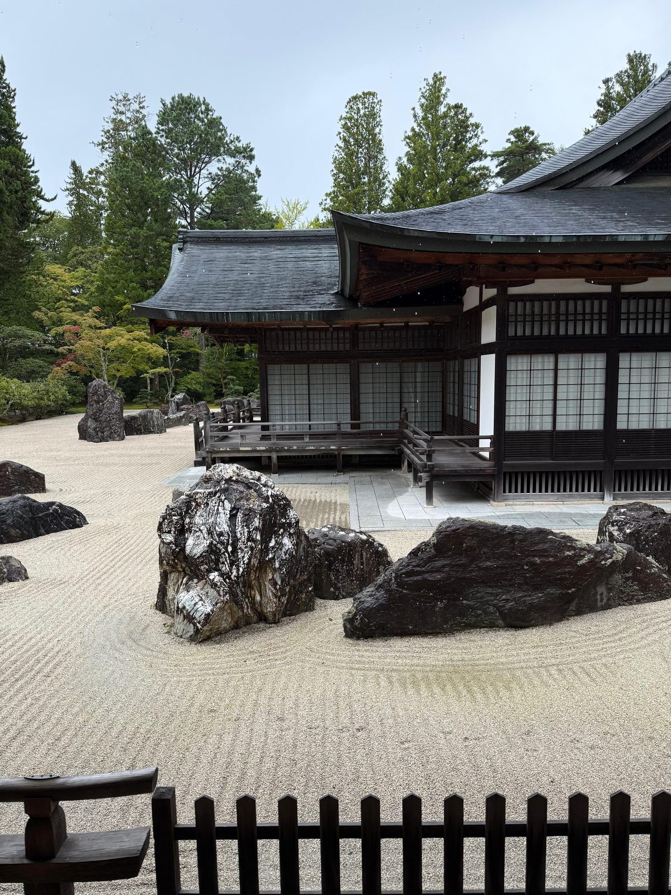

2026
Overview
Japan is definitely a beautiful country and a place worth visiting, especially during the cherry blossom season.
We went once between November and December and a second time between August and September (definitely warmer during those months).
Food is also amazing, especially if you have the freedom to roam around, enter any of the local very small and cute restaurants, and try whatever you like.
However, when it comes to gluten-free and vegetarian (or vegan), it is a (huge) bit more complicated, since most noodles are wheat-based, soy sauce is in almost everything, fish sauce, meat stock or gelatine, starch, and barley (contained in e.g., bottled tea from the convenience stores or vending machines) are all common ingredients.
A general workaround for finding gluten-free food is to stick with sushi, sashimi, and some unseasoned meat (barbecue for instance).
Another option, in times of crisis, is to get onigiri with grilled salmon or spicy roe (plum option for vegetarians) from Lawson or 7-Eleven.
There, you can also find some gluten-free snacks, like rice crackers, some microwaveable rice, frozen vegetables, and ice cream from Häagen-Dazs (stick to Macadamia Nuts, Green Tea, Strawberry, and Vanilla).
Finally, Japanese people are generally very helpful and will try to accommodate your dietary needs if you ask politely.
Since language is a barrier, it is a good idea to have a translation app with either microphone or Japanese keyboard.
One thing that we have been very unlucky with is cocktails, as we didn't have a single decent one (either they were too watered down or they just didn't taste good).
Also, if you are not comfortable with eating with chopsticks, you can always ask for a fork and knife, if they have them, otherwise bring your own.
Tips
-
Telecom: To have data in Japan and be able to navigate around or look things up online, we purchased an eSIM through the Airalo app.
-
Transport: We found it extremely convenient to have a travel card, which you can use to tap in and tap out of the public transport without having to deal with cash.
We used the ICOCA card, since iPhone users can simply add it to the Apple Wallet and top it up with Apple Pay.
-
Food Labels: we found the FoodFit Japan app extremely helpful, as it allows you to scan the ingredient label of any product and check whether it is gluten-free, vegetarian, vegan, and more.
In combination with the Google Translate app with the camera feature, you will hardly have any surprises!
- Luggage Storage: we used the Yamato Transport service to ship our big luggage from Fukuoka to Kyoto - and store it there - before going to Kurokawa Onsen. We recommend going to the physical office, as online booking might be a bit complicated to set up. They offer office-to-hotel or office-to-office delivery and also storage.

Kyoto
September 2026
This city is truly beautiful, with a lot of temples, shrines, palaces, and gardens to visit. Some districts maintained the traditional architecture and atmosphere, while others are more modern and frenetic.
We stayed in the Gion district, which is very central and at walking distance from many landmarks.
Our accommodation was the Apartment Hotel MODISH Gion, which offers cozy apartment units with kitchen and washing machine.
We visited the Kiyomizu-dera temple, the Fushimi Inari Taisha shrine, the Kinkaku-ji temple, the Nijo Castle, the Higashi and Nishi Hongan-ji temples, and the Arashiyama bamboo grove.
For the Fushimi Inari Taisha shrine, the vast majority of the tourists only stay at the base of the mountain and take a few pictures at the first Torii gates.
If you're up for a hike, we recommend going all the way up to the top of the mountain, which takes about 2-3 hours and offers stunning views of the city and the surrounding mountains.
There, you will have more than one chance to take pictures of the Torii gates without any other tourists in the frame.
Where to Eat in Kyoto
This city offers a wide variety of delicious food options, from traditional Japanese dishes to modern fusion cuisine.
For once, we actually had to spend some time choosing what to try, since there were so many options and so little time.
Too bad that usually the number of meals per day is 2 (yeah we normally skip breakfast), so we had to make some hard choices.
- UNO RAMEN.
This seems to be a chain (there are three of them in Kyoto - of which one is located close to the train station), but they maintain a very local and authentic feel, with a small restaurant and a few tables.
The menu is entirely gluten-free and vegan, ranging from ramen to sushi, including even desserts and beers. We tried the dumplings (a must have), the hand-sushi (basically an open uramaki that you have to roll yourself - it tastes good but it might be hard to roll unless you are a pro), two versions of ramen (not worth taking the large version, as the bowl is the same and you end up getting more noodles and less soup), a chocolate cake (a pass for us), and a beer.
We loved this place so much that we ate there four times!
Ratings: 5/5: everything is gluten-free, so you can just eat worry-free - the ramen is amazing.
5/5: everything is gluten-free, so you can just eat worry-free - the ramen is amazing.  5/5: everything is vegan, and the menu is quite extensive.
5/5: everything is vegan, and the menu is quite extensive.
- MOON and BACK Ramen Bar & Brunch Cafe.
This is another ramen restaurant that has two branches in Kyoto. We ate at the Nishiki market branch.
They offer a wide variety of ramen, including gluten-free and meat/vegan options, dumplings and some sushi as well. Both the meat and the vegan ramen are exquisite, and the vegan dumplings are also very good. The staff is also very knowledgeable and helpful.
Note that this restaurant also offers a cooking class. We would have been happy to try it but we found out only too late.
Ratings:- 5/5: many gluten-free options available, with a focus on ramen.
- 5/5: many vegan options, including ramen, dumplings, and sushi.
- SUSHI ROLL SHOP by MOON and BACK.
The same restaurant as above has a dedicated sushi shop where you can buy gluten-free sushi rolls with plenty of vegan options.
Ratings:- 5/5: everything is gluten-free.
- 5/5: many vegan sushi options.
- Ikkakuju Karasuma.
Watch out for the prancing horse, because this restaurant is underground and with a hard-to-find entrance.
Everything on the menu is gluten-free, but they have almost no vegetarian options because most of the sauces contain fish sauce, and everything is cooked on the same grill.
If that is not a problem for you, then this restaurant is specialized in okonomiyaki and yakisoba, which are really amazing!
I also recommend the karaage chicken.
Ratings:- 5/5: everything is gluten-free, with a focus on okonomiyaki and yakisoba.
- 1/5: they can adapt some items, but it depends on how strict you are on sauces and cross-contact.
- curry & tempura koisus.
This small restaurant of the Gion district offers a gluten-free and vegan Japanese curry, made with over twenty different spices.
This is the only gluten-free item on the menu, but it tastes really good and it is worth trying it at least once.
Ratings:- 4/5: only the curry is gluten-free, but it's delicious.
- 5/5: the curry is also vegan.
- Kiyomizu Kyoami.
This is a small stand located in the streets going up to the Kiyomizu-dera temple,
and it offers cinnamon cream puffs filled with matcha or vanilla cream.
These little sweets are really incredible, especially the matcha one!
Ratings:- 4/5: not much variation, but very delicious.
- 4/5: the puffs are also vegetarian, so one more reason to try them.
- Toshoan.
Another café, located near the Nijo Castle and specialized in Japanese pancakes.
They also offer a variety of other cakes and it is also a shop where you can buy sweets.
Ratings:- 4/5: the taste is awesome, but expensive.
- 4/5: all baked goods are vegetarian.
- 汸臼庵 京都清水寺 森陶器館店.
This is another little restaurant located in the streets going up to the Kiyomizu-dera temple, and it offers skewers made out of fish and other things, such as cheese, sweet potato, or more fish.
They are not really memorable, but they are a good snack if you are hungry before or after visiting the temple.
Ratings:- 3/5: good snack close to Kiyomizu-dera, but not memorable.
- 0/5: no options available, since the skewers are made out of fish.

Osaka
September 2026
We spent 4 days in Osaka, which is a great city for shopping and eating.
Osaka is also great as a base for day trips in the Kansai region, as it is quite central and well connected by train or shinkansen.
We stayed at the Wellstay, an apartment hotel close to Shinsekai and at a roughly 10 minutes walk from the metro station.
Among the things we visited, we recommend the Osaka Castle, with its iconic architecture, the interesting museum in its interior, the viewpoints at the top, and the park around it.
Other interesting spots for shopping and eating are the Dotonbori and Shinsekai districts, which are very lively and colorful.
Recommended malls are Namba Parks, Parco, and Daimaru, which are close to each other and host shops from Capcom, Toei Animation, Pokémon, From Software related merchandise, and the Official Godzilla store.
Where to Eat in Osaka
Osaka is known for its amazing food scene, and there are many great places to eat.
The local specialty is takoyaki, which are small balls of dough filled with octopus.
- OSAKA ENGINE RAMEN.
This was by far our favorite restaurant in Osaka, because the ramen was incredible and the staff very helpful, knowledgeable, and friendly.
All ramen options are gluten-free and can be made vegetarian upon request. The gyozas are gluten-free and vegetarian by default.
Ratings:- 5/5: the menu is dedicated gluten-free and the food is amazing.
- 5/5: great options for vegetarians, and vegans for both ramen and gyozas.
- PANCAKE & books bibliothèque.
This café is located in the Namba Parks mall and offers a variety of pancakes, both sweet and savory, which can be made gluten-free upon request.
The pancakes are really delicious and the staff is very helpful.
Ratings:- 5/5: all the pancakes can be made gluten-free -- ask the staff to clean the pan beforehand and for info on the toppings.
- 5/5: brilliant for vegetarians but not for vegans.
- OKO takoyaki vegan vegetarian glutenfree.
This is a small restaurant that specializes in takoyaki.
We ordered one portion of takoyaki with two different sauces, a selection of kushikatsu, and a portion of fries.
Ratings:- 5/5: the menu is entirely gluten-free and the food is great.
- 5/5: the menu is entirely vegan as well.
- Genji-soba.
This is another small restaurant in Dotonbori that offers soba noodles (made out of buckwheat, so naturally gluten-free) and tempura.
Ratings:- 5/5: they offer both soba noodles and tempura, which we found hard to find elsewhere.
- 3/5: the menu doesn't list many options but the staff can accommodate requests.
- Vegan and Gluten Free Osaka THE SECONDROOM.
This is a small restaurant which is not easy to spot, as it is located in a building whose entrance might look closed or abandoned especially at night.
The menu is entirely vegan and gluten-free and it offers a variety of local dishes, such as Okonomiyaki, Takoyaki, and Gyozas.
Ratings:- 3/5: good option if you are in the area.
- 5/5: excellent options for vegetarians.
- Kura Sushi.
This is a common chain of conveyor-belt sushi restaurants in Japan.
Although this restaurant was recommended in the FindMe GF app, we found it hard to match the items on the ordering tablet with those described in the allergen menu.
For instance, some pieces in the allergen menu seemed not to be available on the tablet, which reduced both the gluten-free and vegetarian options.
Moreover, the quality of the sushi was quite low, so we ended up not having a nice experience at all.
Ratings:- 2/5: some options but hard to trust.
- 1/5: very few options.

Nara
September 2026
Nara is a very common day trip from Kyoto or Osaka, as it is very close and it is a small city that can be explored in a few hours.
It is famous for the Nara Park, where you can find many free-roaming deer that are considered sacred and are a symbol of the city.
We recommend taking the bus from the train station to the second half of the park, where you can find the Todai-ji temple, which is a UNESCO World Heritage Site and home to the Great Buddha statue.
There, the deer are a lot less aggressive and you can take some nice pictures with them, without risking getting your ass bitten when they search for food.
To feed them, you can buy special crackers from the shops in the park, then bow to them and wait for them to bow back.
Deer aside, the Todai-ji temple is definitely worth a visit, as it is one of the largest wooden buildings in the world and houses a massive bronze statue of Buddha.
Where to Eat in Nara
Nara offers quite a few options, but since it is a small city, we just grabbed a quick lunch and didn't explore further.
What really stood out on the FindMe GF app was Big Mountain Cafe＆Farm,
which offers Japanese cuisine as well as burgers and fries, with gluten-free and vegetarian options available.
- Naramachi Vegan Nabi ならまちヴィーガン菜美.
This is a small vegan restaurant that offers bento boxes for takeout. We recommend booking them as they tend to sell out pretty quickly.
Ratings:- 5/5: the food is really delicious and fun to have a bento box.
- 5/5: the food is also entirely vegan.

Koyasan
September 2026
Koyasan is a small temple town located on Mount Koya.
It is the center of Shingon Buddhism and hosts the mausoleum of Master Kobo Daishi, where he is said to be in eternal meditation.
The town is surrounded by mountains and forests, and it is a very peaceful and spiritual place.
It hosts several temples, some of which offer accommodation and meals to visitors.
We stayed at the Eko-in Temple,
which can accommodate gluten-free meals. All meals follow a traditional Buddhist cuisine that is vegan, and without onions and garlic.
The temple also offers a meditation session, a fire ritual, and a public bath.
There is also a guided tour of the Okunoin cemetery, which takes place at night and for an extra fee.
Where to Eat in Koyasan
The city is quite small and the Eko-in temple offers a dinner and a breakfast with the booking.
We recommend booking through the official website, as through Booking.com your dietary requests might be ignored.
Besides that, there is also a small café.
- Eko-in Temple.
Since we booked through Booking.com, apparently our dietary request was ignored, but they were still able to accommodate us with a gluten-free meal.
However, despite double-checking everything with the staff several times, we are pretty sure that some parts of the meal contained gluten.
Since the chef was not around during the time of the meal, there might have been some misunderstanding between what the chef prepared and what instead was brought to us.
Ratings:- 4/5: the meal was great, but we didn't feel safe.
- 5/5: everything is vegan, so little to worry about.
- Koyasan cafe it.
That's a small café located in the streets of Koyasan, and it offers two gluten-free muffins, one with carrots and the other with chocolate.
Ratings:- 5/5: the cakes are crumbly but delicious.
- 5/5: following the local tradition, everything is vegan.

Kitakyushu
August 2026
We spent 6 days in Kitakyushu for a work event, taking the Shinkansen from Osaka (~2h travel time).
It is a small city but it feels quite authentic with the network of small streets and alleys, with typical restaurants, pachinkos, karaokes, and so on.
We visited the Kokura castle, which is very beautiful from the outside, and it has a small museum inside, although the interiors are quite new due to the reconstruction after the fire.
Worth visiting is definitely the Japanese garden inside the castle premises, where you can also join a tea ceremony and prepare some matcha accompanied by a local sweet based on mochiko (rice flour) and hence gluten-free.
We stayed at the Rakuten Stay Kokura Station, which is a clean hotel at a reasonable price. It is also very central and offers a small kitchenette which is quite convenient given the food options.
Where to Eat in Kitakyushu
This is the place where we honestly struggled the most to find food.
However, there are a few options available for those with dietary restrictions.
- グルテンフリー 串カツ 極 小倉店.
This restaurant offers deep-fried skewers (kushikatsu) in rice flour and some other options.
The owner is very nice and will help you find something gluten-free. The place is very small as it can only accommodate a few customers at a time, and not super easy to find, as you need to enter a building and walk a long corridor.
For the skewers, they have meat (wagyu beef, chicken, pork), seafood (shrimp, cod, scallop), vegetables (onion, shiitake mushroom, and another local root), and others (cheese, wurst). For these, omakase is also available, ranging from 6 to 13 pieces.
Alternatively, among the plates we tried an omelette (ask to remove the bonito flakes to make it vegetarian), and a delicious seaweed salad.
The good drinks we tried are the oolong tea and the ginger beer. Skip the gin tonic as it tastes just like sparkling water, with neither the notes of the tonic nor the gin.
Ratings:- 5/5: quality is just amazing and it's also cheap.
- 2/5: options are limited to a few items and adapting them to be fully vegetarian required some interactions with the chef.
- バル食堂 COZY.
This restaurant offers a limited selection of gluten-free curries with rice.
Options include chicken, pork, beef, or a combination of the above. I tried the curry with beef and it was delicious.
Unfortunately, there are no vegetarian options available, so we just asked them for a plate with rice and vegetables.
Good enough in an emergency when you are starving but otherwise not really worth it.
Ratings:- 3/5: good quality at a low price, but very limited options.
- 1/5: basically no options, just rice.
- .Blue21 UOMACHI店.
Although the name reads "ALL Gluten Free & Vegan", our fellow engineers would rather write "(ALL Gluten Free) & Vegan", as the vegan options are just a handful.
The cuisine is mostly Western but with some Japanese influences, and it uses natural and healthy ingredients.
We had a delicious vegetable curry accompanied by a plate of appetizers and a potato soup. The quiche (with pork) was however not good at all.
Being the only gluten-free and vegan restaurant in the area, we went there basically every day Sunday to Tuesday just to find out it was closed, to eventually make it on Wednesday just to be disappointed. The restaurant is very small, but it feels cozy and intimate. However, the portions are very small and the price is off the charts for what we have seen in this area.
Ratings:- 3/5: everything is GF but I was hoping for something more traditional.
- 4/5: few options but quite good.
- Sai's.
This could be a good option if you feel like having Japanese barbecue, as they can just give you some meat to grill on charcoal.
I also ordered some sashimi but honestly it was not that good.
The staff was also very kind to accommodate the vegetarian option, which was just a plate of vegetables to grill with a bowl of rice.
All in all, not really good value for money, although we didn't explore much of the meat options as it didn't feel too safe. Definitely not the right place for a vegetarian.
Ratings:- 2/5: I could have had this at home.
- 1/5: basically no options.
- Spice Master.
This is an Indian restaurant just inside the food court of the Kokura train station.
Like most Indian food, it is naturally gluten-free, just make sure to ask for no naan bread and no papadum, and you will be fine.
They have a good selection of curries, most of them also vegetarian (vegetable curry, peas curry, paneer).
The price is slightly higher than average for the portion size, which is however good enough for a meal.
Ratings:- 4/5: if you like Indian food, this place might just save you here.
- 5/5: not traditional, but delicious and filling.

Fukuoka
August 2026
Fukuoka is definitely bigger and more frenetic than Kitakyushu, but still not as massive as Tokyo.
We stopped here one night on our way to Kurokawa Onsen from Kitakyushu, and another night on our way back from Kurokawa Onsen to Kyoto.
We stayed in one of the hotels around the Hakata station, which is very convenient but we found weekend prices three times more expensive than weekday prices.
Given the limited time we had, we only managed to explore the Sumiyoshi Shrine and the Ohori Park, which we reached at sunset for stunning views.
We also recommend stopping by the Canal City Hakata, which is a shopping and entertainment complex with a canal running through it.
The complex has a variety of restaurants and shops, such as the Gundam Base, which is a must-visit for fans of the popular anime series.
The Hakata station is also a quite busy area with a lot of restaurants and shops, very easy to get lost in it!
Where to Eat in Fukuoka
From the size of it, it seems that Fukuoka has a lot of restaurants worth exploring, but given our limited plan, we stuck to what we could find on our beloved app.
- Lotus Palace Hakata.
This Vietnamese restaurant is located in the Hakata station, and either we are very bad or this place is like Isla de Muerta in Pirates of the Caribbean: a place that can be found only by those who have been already.
Once you are in Hakata station, you need to find an elevator, usually located in the first or second floor. Then, you need to go all the way up to the 10th floor. The restaurant is located in one of the two ends of the floor, depending on how you got there. The restaurant can host several guests, but it is likely that you will need to sign up for a waiting list.
The menu is labelled with gluten-free and vegan options and the staff was very careful and accommodating.
Ratings:- 5/5: many gluten-free options and all are delicious.
- 4/5: a few vegetarian options (even fewer gluten-free and vegetarian), but exquisite.
- Sushi Tadao.
Small but exquisite sushi restaurant with a focus on fresh fish and traditional preparation methods.
The chef is very skilled and knowledgeable about sushi, and he takes great care in selecting the best ingredients from the local markets.
He can accommodate gluten-free omakase upon request (through the Instagram profile), and he also speaks good English.
Ratings:- 5/5: the food is just amazing, especially the sashimi, the nigiri, and the uramaki.
- 0/5: no vegetarian options available.
- Danny Churros 博多店.
This is a small churros shop located in the Canal City Hakata. It offers a variety of churros and similar deep fried sweets, all of which are gluten-free as they are made from rice flour.
The churros are very crunchy and delicious. Recommended if you want to have a snack while you browse the stores.
Ratings:- 5/5: all the churros are gluten-free.
- 5/5: naturally vegetarian so no concerns.

Kurokawa Onsen
August 2026
As the name suggests, Kurokawa Onsen is a small town famous for its hot springs (onsen).
It is located in the mountains of Kumamoto Prefecture, and it is a popular destination for those looking to relax and enjoy the natural beauty of the area.
It can be reached by bus from Fukuoka or Kumamoto, and it takes about 2-3 hours to get there.
The town has a traditional Japanese atmosphere, with narrow streets lined with ryokan (Japanese inns) and small shops selling local crafts and souvenirs.
The main activity in Kurokawa Onsen is purchasing a pass with 3 stickers that allows you to visit 3 of the several onsen in the area. The pass can be purchased at the tourist information center or at participating ryokan, and it is valid for six months.
Once you run out of stickers, you can purchase another pass or pay for individual onsen visits.
We stayed at the Okyakuya Ryokan, which is the only ryokan in the area that can accommodate gluten-free and vegetarian diets upon request.
The ryokan is very traditional and cozy, with tatami mat rooms and futon bedding. The staff was very friendly and helpful, and they also speak good English.
The other onsen we visited were Yamamizuki, Nonohana, Shinmei-kan, Fumoto, and Ikoi.
Where to Eat in Kurokawa Onsen
The only place where it is safe to eat in Kurokawa Onsen is the Okyakuya Ryokan, but don't worry, the food is delicious, from the Ryokan garden or from local farms, and it is also very well presented.
We had a traditional Japanese dinner with several courses, including sashimi (salmon and horse meat - tofu for vegetarians), tempura, grilled fish, soups, and steamed vegetables, mushrooms, and wagyu beef (or tofu).
The breakfast was also very good, with rice, soup, beans, and vegetables. Everything was delicious and very abundant!
- Okyakuya Ryokan.
Ratings:- 5/5: all the food was extraordinary, especially the sashimi.
- 5/5: several courses of tofu in different variations and the soup in particular was excellent.